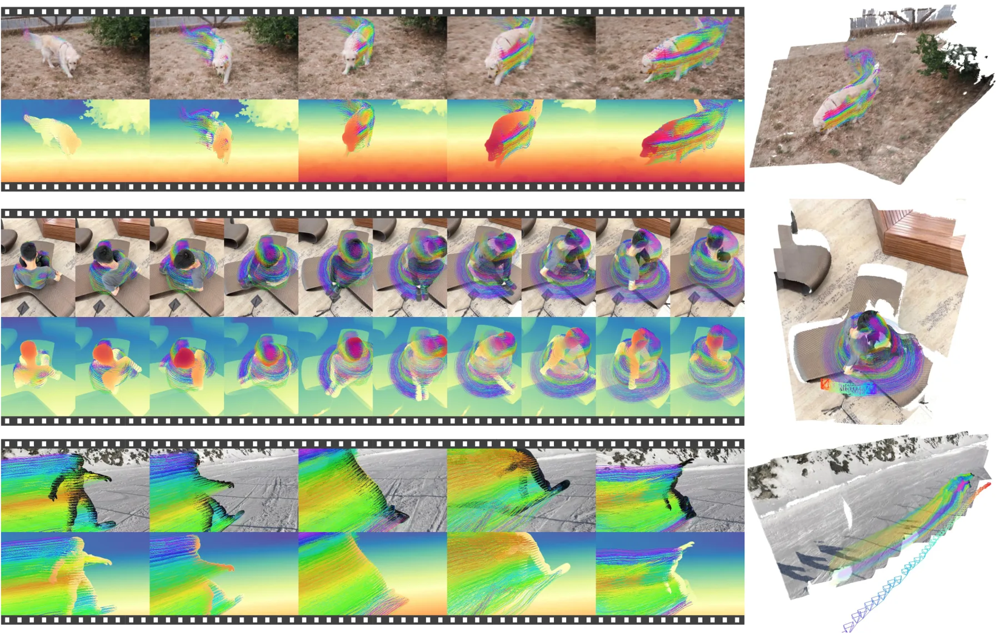
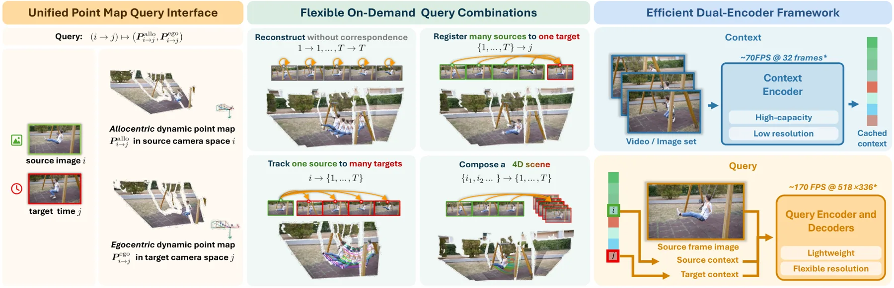
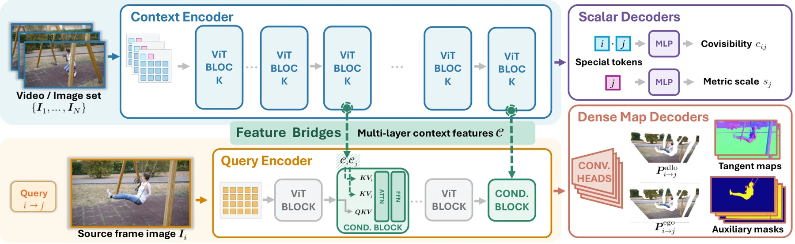
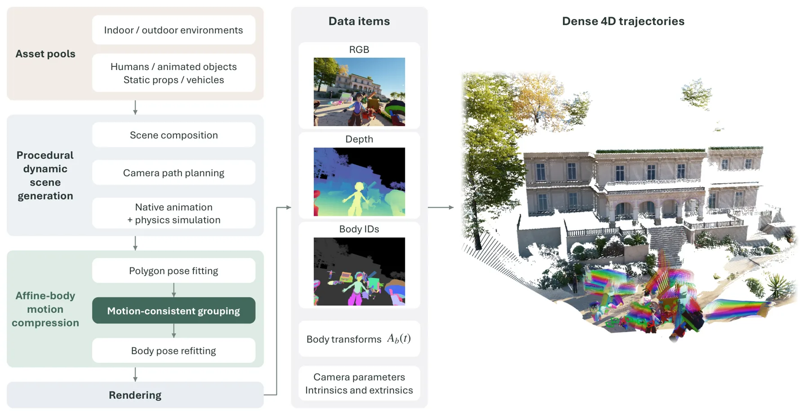
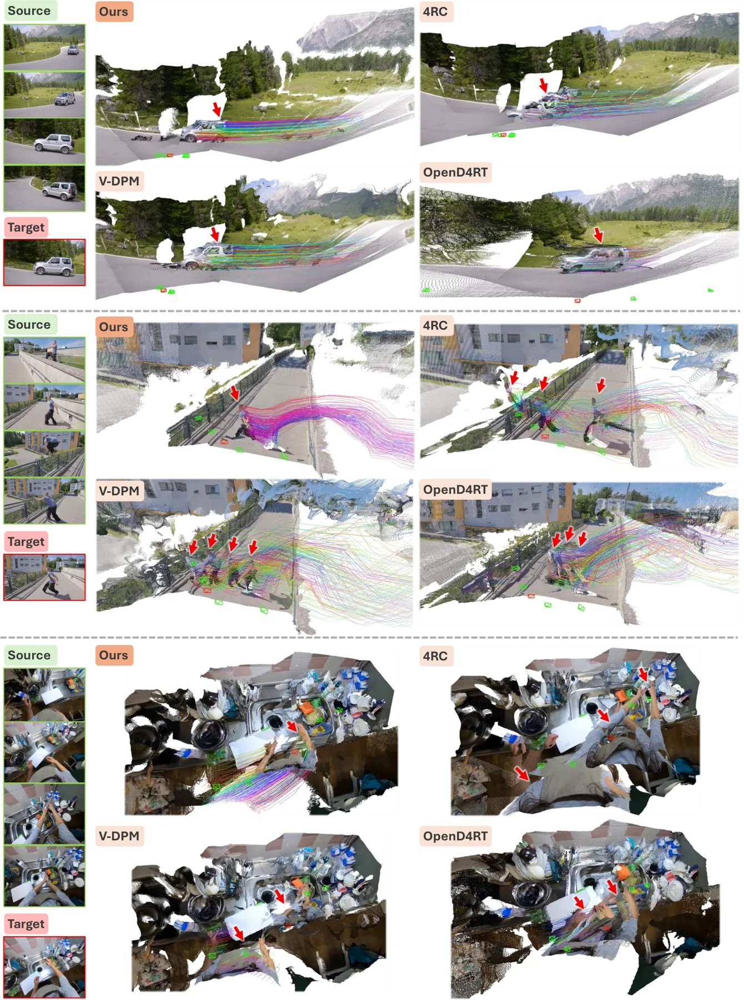
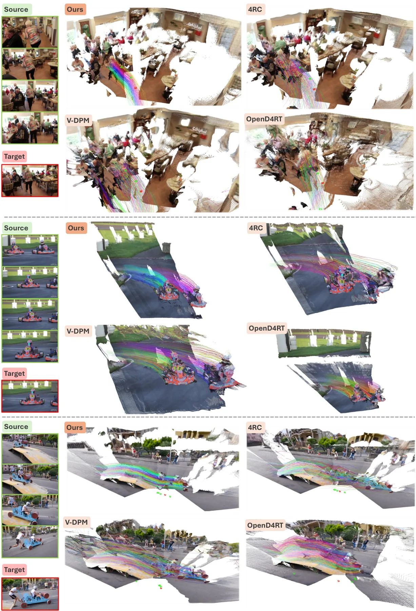

MoGe-4D：把稠密 4D 重建与跟踪压进同一个点图查询
MoGe-4D: Efficient, Flexible, and Unified Dense 4D Reconstruction and Tracking
一句话：把「某像素在另一时刻、另一相机里在哪」变成唯一的查询接口，再用一个重 context 编码器 + 一个轻 query 解码器把稠密时空查询摊薄，几何、运动、位姿三件事就都从同一次前向里出来了。
RelEPE
AUC25
|log s|
speedup
作者、单位与技术谱系 · Research context
作者与单位
研究脉络
- MoGe → MoGe-2 → MoGe-3方法基座（团队前作）关系：直接继承：仿射不变点图、ROE 尺度-平移对齐、MoGe-3 的随机射线分区局部几何损失都在本篇沿用。[MoGe-4D §3.1 / §A.2]
- D4RT（统一时空 point query）方法上游关系：问题承接与改造：D4RT 提出统一 query 空间但逐点解码太贵；本篇把 query 粒度从「单点」改成「整张点图」，并加双编码器摊薄成本。[MoGe-4D §1 与表 1]
- VGGT / π³ / Depth Anything 3 / VGGT-Ω方法上游（骨干与上限对照）关系：骨干初始化 + 性能上限：三种 context encoder 分别由 DINOv2、V-JEPA 2.1、VGGT-Ω 初始化，重建指标以这些专用模型为上限参照。[MoGe-4D §3.2 / §5.2]
- MoGe-4D（本篇）本篇推进关系：把「点图」从 3D 扩到 4D：同一 query 出 allocentric + egocentric 两张图，位姿闭式解出，并用 RigIDTrack 解决稠密 4D 监督的存储瓶颈。[MoGe-4D 摘要 / §4]
合作网络
- MoGe 系列官方代码Microsoft Research → MoGe / MoGe-2 / MoGe-3 开源实现关系：官方代码（同一研究线的连续发布）[GitHub]
- MoGe-4D 项目页MoGe-4D 作者团队 → https://microsoft.github.io/MoGe-4D关系：官方项目页（arXiv comment 给出）[项目页]
- USTC / UCAS / Tsinghua 与 MSR 的联合署名Ruicheng Wang / Linlin Xin / Jianfeng Xiang / Zelong Lv → Microsoft Research关系：共同署名与双单位标注[论文 TeX 作者块]
作者单位、双单位标注与官方项目页均可核验；「团队前作」一栏依据原文对 MoGe/MoGe-3 的显式引用与同一 microsoft 代码组织，未据人名推断师生关系。
方法本质拆解 · What actually changed
是不是微调？
是从预训练骨干出发的端到端继续训练，不是纯微调也不是从头训：context encoder 分别以 DINOv2、V-JEPA 2.1、VGGT-Ω 初始化，query encoder 用预训练 ViT-B，bridge 先做一次独立的特征对齐预训练再联合训练，全部参数在 160k 步里都更新（前 1000 步只训新初始化的 neck/头，之后线性 warmup + 余弦衰减）。
有没有额外约束？
约束体现在三组损失与对齐方式上：几何用全局点图损失 + 多尺度局部点图（随机射线分区、粗 α=4 细 α=32 拟合局部平移）+ 邻点梯度角度的 edge loss；运动用相邻目标时刻的点图差（全局与局部两级）约束时序一致；辅助损失监督切向、不确定性、可见/天空/动态掩码、米制尺度与共视度。所有预测先经 ROE 尺度-平移对齐再算逆距离加权 L1，因此尺度/偏移歧义不会污染几何监督。
推理/后端到底做了什么？
推理分三步：先用 self-query 联解光轴偏移与焦距（逐帧或序列共享），再对任意 (i,j) 做置信度、动态/天空掩码加权后的闭式刚体对齐得到相对位姿，最后用共视度搭稀疏位姿图同步全局位姿与可选相对尺度（Umeyama + 图优化）。它是前馈的，没有测试时优化网络权重；但闭式对齐与位姿图同步是显式的几何后处理，不能算成「网络直接输出位姿」。
方法本质是什么？
本质是把几何、运动、位姿三种输出统一成「一个像素在何时、何相机系下在哪」的查询，然后用「一次重编码 + 多次轻解码」把稠密查询的成本摊开。它没有新造表征，也没有引入新的几何优化器，而是通过改变输出接口把位姿从回归问题变成 3D-3D 对应求解问题，从而在精度与效率上同时收益。
输入无位姿视频，重 context 编码器跑一次缓存时空特征、轻 query 解码器按任意分辨率出成对点图，位姿由置信度加权刚体对齐闭式解出，50 帧全对稠密跟踪比 4RC 快约 4 倍。

结论与问题Conclusion & Motivation
核心结论
MoGe-4D 的核心结论是：4D 重建与 3D 跟踪不需要两套输出头，它们都可以归约为「源像素在目标时刻、目标相机系里的三维位置」这一个查询。每个 query (i,j) 同时输出 allocentric（源相机系）与 egocentric（目标相机系）两张点图，前者锚在源视角上、静态背景稳，后者锚在目标视角上、大幅运动前景准；两张图描述同一表面，只差一个刚体变换，于是相对位姿可以闭式解出，而不是由网络回归。效率上它把场景上下文与查询解码拆开：context encoder 在粗网格上跑一次并缓存，占 90% 以上参数；query encoder 是 ViT-B，按需以任意 token 预算解码。结果是跟踪指标全面领先（世界系全点 RelEPE 0.077–0.099，最强基线 4RC 0.152、V-DPM 0.138），重建与 VGGT-Ω/π³ 同档，50 帧全对跟踪比 4RC 快约 4 倍。
动机与问题
现有 4D 方法有两条路：一是给静态 3D 基础模型外挂运动分支或独立跟踪模块（St4RTrack、V-DPM、4RC、Track4World），几何与运动被拆成解耦任务，坐标约定难以统一；二是 D4RT 式的统一时空查询，但解码是逐点的，要稠密覆盖空间与时间时代价爆炸。作者据此提出三个并列目标：统一（几何与运动都是「点在哪」）、灵活（重建要聚合多视图，跟踪要跟随表面点，应该允许任意源-目标组合与任意分辨率）、高效（视频分析要成百上千个稠密查询，算力与显存必须随序列长度可摊）。真正待解的问题是：能否在保留查询式通用性的同时，把稠密时空解码的成本从「每次查询都过重编码器」降到「编码一次、便宜地解码很多次」。
方法Method
方法总览
输入是无位姿的 RGB 序列。context encoder 是高容量 ViT，对整段序列做跨帧注意力，但在粗空间 token 网格上运行以抑制二次复杂度，输出多层特征并缓存（每个 query 复用）。feature bridge 用 LayerNorm + 线性层把选定 context 层投影到 query block 的表示空间，先单独做一次特征对齐预训练再端到端训练。query encoder 是预训练 ViT-B，对每个 query 的源帧重编码以找回细节，在条件化 block 中把源帧与目标帧的桥接特征作为额外 K/V 加入，保持 token 与源图网格对齐，因此 token 预算可在推理时自由调整而无需重跑重编码器。卷积头解码成对点图、表面切向、逐点不确定性、可见性/天空/动态掩码，MLP 头从特殊 context token 回归米制尺度与成对共视度。推理时先用 self-query 恢复焦距与光轴偏移，再对任意 (i,j) 做置信度加权刚体对齐得到相对位姿，长序列用共视度搭稀疏位姿图同步全局位姿与可选相对尺度。
关键技术细节
三个设计值得单独记。第一，双图配对：allocentric 图在源相机系里表达目标时刻的点，因此静态背景即使离开目标视场也不「鬼影」；egocentric 图在目标相机系里表达同一批点，对大幅运动的前景更准；两图融合成 world 系点图可兼顾。因为两图只差刚体变换，位姿直接从 3D-3D 对应解出，且解的残差是几何残差而非黑箱 token。第二，仿射不变 + ROE 对齐：预测的是仿射不变点图，通过逐相机尺度 α_k 与光轴偏移 δ_k 恢复，训练时在「共享尺度」与「逐相机尺度-平移」之间随机切换，避免模型把尺度混淆学进特征。第三，RigIDTrack 的标注表示：渲染帧存 RGB、深度、内参、外参、逐像素 body ID 与每个 body 的世界仿射变换 A_{b,t}；任意源像素到目标时刻、目标相机的三维位置由 E_k A_{b,j} A_{b,i}^{-1} E_i^{-1} 一条 4×4 链给出，与时间间隔无关（O(1)），百万面压缩到数千条轨迹、亚像素重投影误差。

实验Experiments
实验设置
3D 跟踪在 DynamicReplica、PointOdyssey、Syn4D、Aria Digital Twin、Panoptic Studio 与 RigIDTrack 测试集上评测，32 帧片段、5 fps，指标为 RelEPE（按真值相机距离归一化）、AUC25 与遮挡准确率 OA，分相机系/世界系与全点/可见子集；对照 St4RTrack、Open-D4RT、Any4D、Trace Anything、V-DPM、Track4World、4RC。多视图重建在 7-Scenes、Bonn、ETH3D、KITTI、Sintel、ScanNet 上评测最多 32 张无位姿图（子采样保持相邻重叠 ≥50%），指标含尺度/仿射对齐深度、ATE/RPE、匹配距离与全局点 RD/δ25/AUC25；对照 MonST3R、MegaSAM、VGGT、MapAnything、π³、DA3、LingBot-Map、VGGT-Ω 以及统一的 4D 方法。训练用 64 张 A100-40GB、160k 步、全局 batch 128，课程从 4 帧片段/小 token 预算扩到 32 帧，数据上 RigIDTrack 占 40% 以上；默认推理预算 500 context token、900 map-query token、250 pose-query token。
实验数字与比较
跟踪（表 2a）：V-JEPA 变体在世界系全点 RelEPE 0.077、AUC 78.89，对应最强基线 V-DPM 0.138/72.65 与 4RC 0.152/71.86；相机系全点 RelEPE 0.084 对 V-DPM 0.160，原文表述为降 47.5%（相机系）与 44.2%（世界系）。OA 88.75 对 Track4World 84.96。重建（表 2b）：VGGT-Ω 变体全局点 AUC25 84.13、δ25 97.34、RD 0.045，对照 VGGT-Ω 85.81/98.06/0.048、π³ 81.09/95.70/0.058、DA3 74.00/93.42/0.083；相同 DINOv2 初始化与同数据的受控对照里，MoGe-4D 在 13 项指标中赢 π³ 12 项，全局点 AUC 73.41→79.26、RD 0.079→0.063。米制尺度（表 3）：最佳 |log s| 0.060（DA3 0.072、MapAnything 0.177），深度 Rel 0.079、δ25 97.00%（DA3 0.103/89.34%）。效率：50 帧全对（2500 对）比 4RC 快约 4 倍；即使给 Open-D4RT 假设 10× 加速，32 帧仍是 8.5 s 对 81.7 s。长序列：500 帧 Oxford-Spires 单次前向，比对手快 1.7–4.3 倍。
消融/失败边界
位姿恢复方式是最大的开关（表 4）：用点图闭式解 ATE 0.057、全局点 AUC 71.17；换成 context camera token 直接回归则 ATE 0.125、AUC 54.11，宽基线时退化尤其明显，说明「把网络终止在稠密 3D 坐标上」比回归位姿更可靠。feature bridge 若随机初始化而非预对齐，全局点 AUC 71.17→62.65、ATE 0.057→0.079，说明跨骨干表征必须先对齐再联合训练。去掉 query 流自身的 K/V（纯 cross-attention）只有小幅下降（AUC 71.17→69.28），属可选项。容量分配上，放大 context encoder 收益显著，把 query encoder 从 ViT-B 换成 ViT-L 只有微弱提升却带来约 2.5× 单 query 延迟。失败边界有三处：物体边界与细结构的飞点（有限 token 预算 + 卷积解码把突变抹平）；V-JEPA 变体超过 100 帧即退化（时序 RoPE，即使加 YaRN），说明「500 帧可用」只在 DINOv2 变体成立；作者也承认全局长注意力仍是二次复杂度，长序列单次前向更像泛化探针而非部署形态。
局限与迁移Limitations & Transfer
局限与待核验
作者明确承认：物体边界/薄结构处几何仍会平滑与飞点；面部捕捉、铰接手跟踪等专用域不在覆盖范围；超过 100 帧时不同骨干的外推能力差异大，V-JEPA 变体退化明显，且全局长注意力使数百帧前向不具部署性。我们的待核验项：第一，米制尺度来自 MLP 头（|log s| 0.060），但只在五个真实数据集上平均，长焦或低纹理场景的尺度偏差分布未给；第二，表 2b 的「与专用 3D 模型同档」是在 32 帧、≥50% 重叠的片段上得到的，稠密跟踪的 32 帧 5 fps 设定也偏短，跨分钟级动态序列的漂移只有 Oxford-Spires 的定性轨迹图，没有逐段 ATE 曲线；第三，RigIDTrack 是合成数据（Blender 程序化场景），真实动态数据的标注来自 RGB-D 管线，训练分布与 KITTI 这类室外动态场景的差距未量化；第四，训练成本 160k 步 × 64×A100-40G，论文未给出权重与代码链接，复现需自建数据管线。
与你研究路线的关系
这篇对我们最有用的是「接口 + 摊薄」这一对概念。其一，点图查询接口可以当我们多传感器融合里的统一观测：把「某像素在 t_j、相机 k 下的三维位置」当作因子图的观测单元，allocentric/egocentric 双图正好对应「世界系锚定」与「当前帧局部精度」两种残差写法，可以直接映射成我们后端的两类因子。其二，双编码器的成本结构值得照搬：把重计算放在「一次场景编码」，把轻解码留给下游任意查询，这与我们「前端一次几何先验 + 后端多次假设评估」的架构同构；token 预算可调也意味着可以在后端根据不确定性动态加密采样。其三，RigIDTrack 的「逐像素 body ID + 仿射体」是低成本生成稠密对应真值的思路，可用于我们自己造动态场景验证集。下一步最小实验：在现有数据上固定后端，把深度/点图输入从「逐帧独立预测」换成「同一次 context 编码 + 多 query 解码」，比较同一序列上前后端一致性与重投影残差分布，验证摊薄是否真的降低了跨帧不一致。







